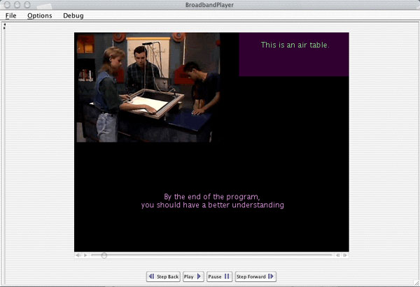

|
Examples : Basic Player Interface : Viewing a Lecture with Preferences Menu Removed This image shows the same lecture presentation as Basic Player Interface : Viewing a Lecture with Annotation and Captions, but the navigational structure and preferences on the left have been removed, increasing the amount of screen space that is available. |